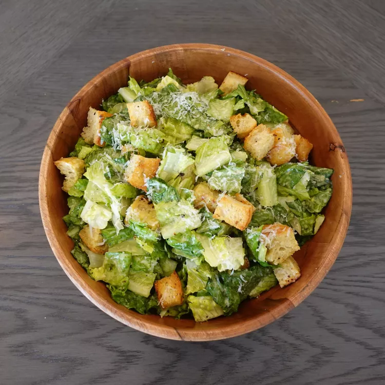

Caesar Salad

Description
Caesar Salad was invented in the early 20th century in Tijuana Mexico. Its inventor stumbled upon the recipe when he had very little ingredients and created it with what little he has. Caesar Salad is named after its inventor Caesar Cardini and not the more famous Caesar, Julius.
Ingredients
Caesar Dressing
- Two Cloves of Garlic
- Four Anchovies
- One tbsp Dijon
- One Egg Yolk
- Half tsp Worcestershire
- Two tbsp Lemon Juice
- 100ml Olive Oil
- Croutons
- Romaine Lettuce
- Parmesan cheese
Steps
- Combine all dressing ingredients except olive oil in a blender and blend. Add oil while blending.
- Chop romaine lettuce into bite sized pieces.
- toss romaine lettuce with caesar dressing until evenly coated.
- top with croutons and parmesan cheese.